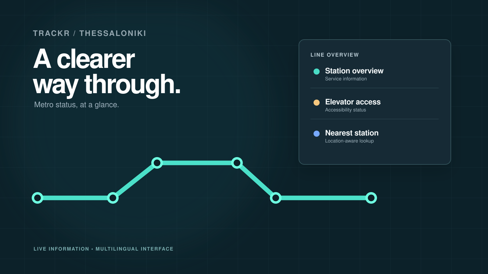
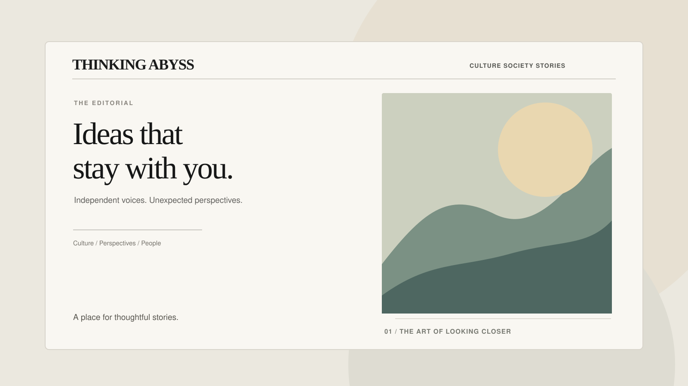

WEB DASHBOARD
trackr
A more accessible view of the Thessaloniki Metro. See the features and technical approach behind the project.
View case studyI'm new92, a Computer Science student at Aristotle University of Thessaloniki. I work at the intersection of security, software and thoughtful web experiences.
Tools, experiments and digital experiences—each built to solve something specific.

A more accessible view of the Thessaloniki Metro. See the features and technical approach behind the project.
View case studyBeyond code libraries: creating thoughtful places for people, ideas, and stories.

An editorial home for ideas and independent voices. Visit the live publication to explore its work.
View case studyYears of building with Python have shaped the way I approach a problem. Security taught me to question assumptions; design taught me to care about the details people actually see.
Assessed vulnerabilities across WordPress, Magento, and Laravel. Researched advisories and affected versions, evaluated impact, recommended mitigations, and produced detailed technical reports with an emphasis on source reliability.
Specialising in communication networks and systems security, including network engineering, wireless and mobile networks, IoT, software security, vulnerability assessment, penetration testing and web application security.
Graduated summa cum laude as a Computer and Computer Networks Technician. Worked with Python, robotics and HTML/CSS/JavaScript, alongside OSI and TCP/IP networking fundamentals.
GitHub figures are the snapshot provided in the original portfolio, not live counters.
A mix of technical depth, practical experimentation and a careful eye for execution.
Starstruck ×2 · Pull Shark ×2 · Galaxy Brain · YOLO · Quickdraw
A growing body of work across programming, security research, and experimentation.
Have an interesting project, security question, or idea? I'd be glad to hear from you.